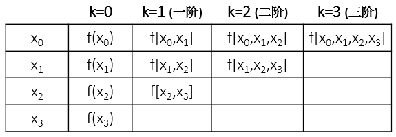
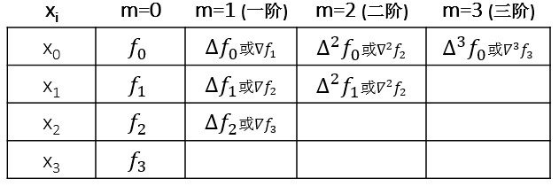

Lagrange插值法通过选定一组形式对称的插值基函数来线性组合出插值多项式，但问题在于计算量比较大，且容易重复计算，这个问题可以通过逐次线性插值的方法予以解决，由递推关系逐步得到更高次的插值。Newton插值法的显著优势在于：既能得到递推式，又有明确的插值多项式——真是皆大欢喜！
首先我们知道n+1个节点的插值多项式次数不超过n，Newton插值多项式的构造形式如下：
$$N_n(x)=a_0+a_1(x-x_0)+a_2(x-x_0)(x-x_1)+\cdots+a_n(x-x_0)\cdots(x-x_{n-1})$$
我们自然要问，这样构造的道理在哪？（我不会问“为啥我就想不出来这样构造呢？”） ^_^ 其实，上面的n+1个多项式是线性无关的，故而任何一个n次多项式都可以由之线性组合得到，也即可以作为插值基函数。另外，插值条件\(N_n(x_i)=y_i, i=0,1,2,\cdots,n\) 可以求得系数\(a_i\)，有
$$a_0=f(x_0), a_1=\frac{f(x_1)-f(x_0)}{x_1-x_0}, a_2=\cdots$$
再往下待定系数\(a_i\)的形式就比较复杂了，所以先引入差商的概念。
差商
对于互异节点，\(f(x)\)在点\(x_i,x_j\)的一阶差商
$$f[x_i,x_j]=\frac{f(x_i)-f(x_j)}{x_i-x_j}$$
\(f(x)\)在点\(x_i,x_j，x_k\)的二阶差商（也就是差商的差商）$$f[x_i,x_j,x_k]=\frac{f[x_i,x_j]-f[x_j,x_k]}{x_i-x_k}$$
以此类推，\(f(x)\)在点\(x_0,x_1,\cdots,x_k\)的k阶差商（即k-1阶差商的差商）
$$f[x_0,x_1,\cdots,x_k]=\frac{f[x_0,x_1,\cdots,x_{k-1}]-f[x_1,x_2,\cdots,x_k]}{x_0-x_k}$$
差商的定义非常简单，其具有如下性质：
- k阶差商可由函数值\(f(x_0),f(x_1),\cdots,f(x_k)\)线性组合表示，且
$$f[x_0,x_1,\cdots,x_k]=\sum^k_{i=0}\frac{f(x_i)}{(x_i-x_0)\cdots(x_i-x_{i-1})(x_i-x_{i+1})\cdots(x_i-x_k)}$$
- 差商具有轮换对称性，即任意调换节点的次序，差商值不变，例如\(f[x_0,x_1,x_2]=f[x_1,x_0,x_2]=f[x_2,x_1,x_0]\).
- 如果$f(x)是x的n次多项式，则k阶差商是n-k次多项式，k>n时差商为零.
显而易见，差商也是用递推关系来定义的，我们可以用表格（差商表）来展示其计算过程：

现在我们再继续讨论Newton插值公式，有了差商概念之后，我们将待定系数写成 \(a_k=f[x_0,x_1,\cdots,x_k]\), 也就是说Newton插值多项式的组合系数为差商形式。由此，\(f(x)\)关于节点\(x_i\)的n次Newton插值多项式写为
\begin{align*}
N_n(x) &= f(x_0)+\sum^n_{k=1}f[x_0,x_1,\cdots,x_k]\prod^{k-1}_{j=0}(x-x_j)\\
&= f(x_0)+\sum^n_{k=1}f[x_0,x_1,\cdots,x_k]P_k(x)
\end{align*}
由于插值多项式的唯一性，Newton法与Lagrange法插值多项式的余项（截断误差）相同，即
$$R_n(x)=f(x)-N_n(x)=\frac{f^{(n+1)}(\xi)}{(n+1)!}P_{n+1}(x)$$
实际上，我们可以直接由差商定义得到\(f(x)\)，只需将\(x\)视为一个节点(\(x\ne x_i\))，则
\begin{align*}
f(x) &= f(x_0)+f[x,x_0](x-x_0)\\
&= f(x_0)+(f[x_0,x_1]+f[x,x_0,x_1](x-x_1))(x-x_0)\\
& \cdots \\
&= N_n(x)+f[x,x_0,x_1,\cdots,x_n]P_{n+1}(x)=N_n(x)+R_n(x)
\end{align*}
故，又有$$R_n(x)=\frac{f^{(n+1)}(\xi)}{(n+1)!}P_{n+1}(x)=f[x,x_0,x_1,\cdots,x_n]P_{n+1}(x)$$
另外，我们可以直接写出递推式
$$N_{n+1}(x)=N_n(x)+f[x_0,x_1,\cdots,x_{n+1}]P_{n+1}(x)$$
一般可以将得到如下估计误差的使用公式 \(R_n(x)\approx f[x_0,x_1,\cdots,x_{n+1}]P_{n+1}(x)\).
实际上，Newton插值与逐次线性插值在节点逐步增加时，计算公式的每一步都是等价的。但是更一般地来说，Newton插值在计算多个\(x\)点时需要重新计算的相对较少。
差分
与差商密切相关的另一个概念是差分，它是指在等距节点上函数值的差，引进这一概念的目的是为了回答以下问题：“在某些特殊的情形是否可以简化Newton插值?”所谓等距节点，是指对给定的常数\(h\)（称为步长），节点\(x_i=x_0+ih\), \(i=0,1,\cdots,n\)，称\(\Delta f_i \equiv f(x_{i+1})-f(x_i)\) 为\(f(x)\)在\(x_i\)处的一阶向前差分；\(\nabla f_i \equiv f(x_{i})-f(x_{i-1})\) 为\(f(x)\)在\(x_i\)处的一阶向后差分。\(\Delta^2 f_i \equiv \Delta f(x_{i+1})-\Delta f(x_i)\) 为\(f(x)\)在\(x_i\)处的二阶向前差分；\(\nabla^2 f_i \equiv \nabla f(x_{i})-\nabla f(x_{i-1})\) 为\(f(x)\)在\(x_i\)处的二阶向后差分。依此类推，
$$\Delta^m f_i \equiv \Delta^{m-1} f(x_{i+1})-\Delta^{m-1} f(x_i)$$
为\(f(x)\)在\(x_i\)处的m阶向前差分；$$\nabla^m f_i \equiv \nabla^{m-1} f(x_{i})-\nabla^{m-1} f(x_{i-1})$$
为\(f(x)\)在\(x_i\)处的m阶向后差分。可以看出，m阶向前差分是从\(f(x_i)\)开始，上溯m个函数值到\(f(x_{i+m})\)；而m阶向后差分是从\(f(x_i)\)开始，下溯m个函数值到\(f(x_{i-m})\)。我们得出（可以用数学归纳法证明，但从理解上比较直观）向前差分和向后差分有以下关系式：\(\Delta^m f_i = \nabla^m f_{i+m}\)，例如：\(\Delta f_i = \nabla f_{i+1}\)，\(\Delta^2 f_i = \nabla^2 f_{i+2}\)。由此，我们给出如下差分表：

另一方面，我们已经指出“m阶向前差分是从\(f(x_i)\)开始，上溯m个函数值到\(f(x_{i+m})\)”，也就是说\(\Delta^m f_i\)与\(f_i,f_{i+1},\cdots,f_{i+m}\)这m+1个函数值相关，实际上通过归纳法可以得出差分与函数值有如下关系：
$$\Delta^m f_i=C^0_m f_{i+m}+C^1_m f_{i+m-1}+\cdots+C^{m-1}_m f_{i+1}+C^m_m f_i, $$
系数为组合数，数值上与\((a-b)^m\)的展开系数相同。
为了导出等距节点时差分插值公式，我们先讨论差分与差商的关系，然后直接带入Newton插值公式即可。节点距离h，有
$$f[x_i,x_{i+1}]=\frac{f_{i+1}-f_i}{x_{i+1}-x_i}=\frac{\Delta f_i}{h}=\frac{\nabla f_{i+1}}{h}$$
$$f[x_i,x_{i+1}]=\frac{f[x_i,x_{i+1}]-f[x_{i+1},x_{i+2}]}{x_{i}-x_{i+2}}=\frac{\Delta f_i-\Delta f_{i+1}}{-2h^2}=\frac{\Delta^2 f_i}{2h^2}=\frac{\nabla^2 f_{i+2}}{2h^2}$$
以此类推，
$$f[x_i,x_{i+1},\cdots,x_{i+m}]=\frac{\Delta^m f_i}{m!h^m}=\frac{\nabla^m f_{i+m}}{m!h^m}$$
$$f[x_0,x_{1},\cdots,x_{k}]=\frac{\Delta^0 f_i}{k!h^k}=\frac{\nabla^k f_{k}}{k!h^k}$$
如果节点\(x_0,x_1,\cdots,x_n\)是等距节点，即\(x_i=x_0+ih, h=\frac{b-a}{n}\)。Newton插值基本公式
$$N_n(x)=f(x_0)+\sum^n_{k=1}f[x_0,x_1,\cdots,x_k]P_k(x)$$
，如果再令\(x=x_0+th\)，可以得出
$$P_k(x)=\prod^{k-1}_{j=0}(x-x_j)=\prod^{k-1}_{j=0}(x_0+th-x_0-jh)=\prod^{k-1}_{j=0}(t-j)h,$$
则
\begin{align*}
N_n(x_0+th) &= f(x_0)+\sum^n_{k=1}[\frac{\Delta^k f_0}{k!h^k} \prod^{k-1}_{j=0}(t-j)h]\\
&= f(x_0)+\sum^n_{k=1}[\frac{\Delta^k f_0}{k!} \prod^{k-1}_{j=0}(t-j)]
\end{align*}
余项化为$$R_n(x_0+th)=\frac{f^{(n+1)}(\xi)}{(n+1)!}h^{n+1}\prod^{n}_{j=0}(t-j)$$
当然，我们由此Newton向前插值公式可以直接得到向后插值公式，只需要用\(\nabla^k f_{n}\)替换\(\Delta^k f_0\)，\((t-j)\)换成\((t+j)\)即可。